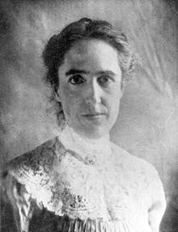
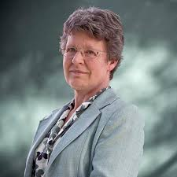
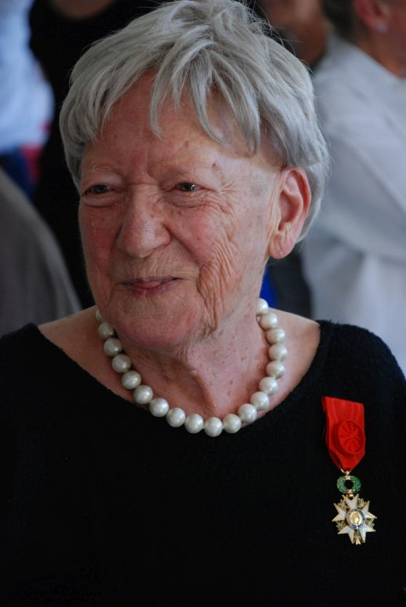
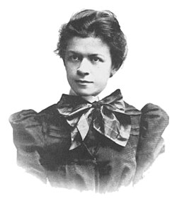
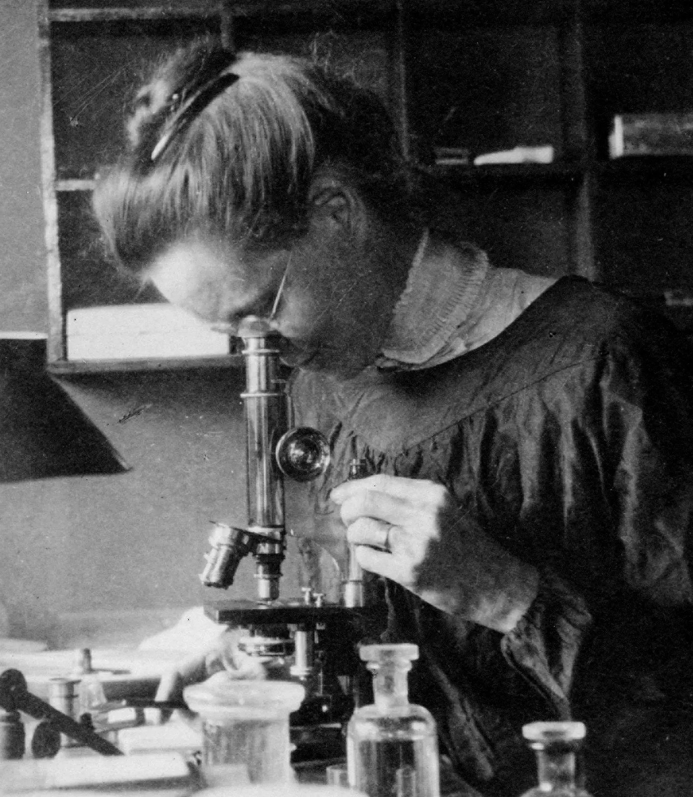
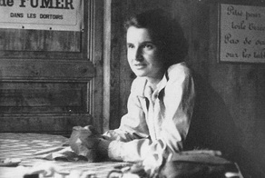

L'Effet Matilda
L’effet Matilda est un phénomène qui désigne le fait que les découvertes, inventions et travaux réalisés par des femmes sont souvent oubliés, minimisés ou attribués à des hommes. Ce phénomène existe depuis longtemps dans l’histoire des sciences, de la médecine, des technologies et de nombreux autres domaines.
Le terme « effet Matilda » a été créé par l’historienne des sciences Margaret Rossiter en hommage à Matilda Joslyn Gage, une militante américaine du XIXe siècle qui dénonçait déjà les inégalités entre les hommes et les femmes dans le monde scientifique.
Pendant des siècles, les femmes ont eu plus de difficultés à accéder aux études, aux laboratoires ou aux métiers scientifiques. Même lorsqu’elles réalisaient des découvertes importantes, leur travail était parfois ignoré ou attribué à leurs collègues masculins. Certaines femmes n’ont reçu aucune récompense alors que leurs recherches ont changé l’histoire.
De nombreuses scientifiques célèbres ont été victimes de l’effet Matilda. Par exemple, Rosalind Franklin a joué un rôle essentiel dans la découverte de la structure de l’ADN, mais elle n’a pas reçu la même reconnaissance que ses collègues. Jocelyn Bell Burnell, qui a découvert les pulsars, n’a pas reçu le prix Nobel attribué à son équipe. D’autres femmes comme Lise Meitner, Nettie Stevens ou Marthe Gautier ont également vu leurs travaux oubliés ou minimisés.
Aujourd’hui, l’effet Matilda est davantage reconnu et de nombreuses initiatives cherchent à remettre en lumière les femmes scientifiques et inventrices oubliées. Ce phénomène rappelle l’importance de reconnaître le travail de chacun de manière juste et égale, quel que soit le genre.

Ada Lovelace
Ada Lovelace est née le 10 décembre 1815 en Angleterre. Fille du célèbre poète Lord Byron, elle développe très tôt une passion pour les mathématiques et les sciences. À une époque où les femmes avaient peu accès aux études scientifiques, elle réussit pourtant à se faire remarquer grâce à son intelligence. Elle travaille avec Charles Babbage, inventeur d’une machine appelée « machine analytique », considérée comme l’ancêtre de l’ordinateur. Ada Lovelace imagine alors des programmes capables d’être exécutés par cette machine. Elle écrit ainsi le premier algorithme informatique de l’histoire, ce qui fait d’elle la première programmeuse. Ses idées étaient très en avance sur son époque et ont inspiré l’informatique moderne.
Chien-Shiung Wu
Chien-Shiung Wu est née le 31 mai 1912 en Chine. Très intéressée par les sciences, elle part étudier aux États-Unis où elle devient une grande spécialiste de la physique nucléaire. Elle réalise des expériences très importantes sur la radioactivité et démontre qu’une loi de la physique considérée comme vraie ne fonctionnait pas toujours. Cette découverte révolutionnaire permet à deux scientifiques de recevoir le prix Nobel en 1957, mais Chien-Shiung Wu n’est pas récompensée malgré son rôle essentiel. Elle est aujourd’hui surnommée « la première dame de la physique ».

Hedy Lamarr
Hedy Lamarr est née le 9 novembre 1914 en Autriche. Connue comme une grande actrice de cinéma hollywoodien, elle était aussi passionnée par les inventions et les nouvelles technologies. Pendant la Seconde Guerre mondiale, elle imagine avec le compositeur George Antheil un système de transmission radio sécurisé destiné à protéger les communications militaires. Cette invention devient plus tard la base de technologies modernes comme le Wi-Fi, le Bluetooth et le GPS. Pendant longtemps, son talent scientifique a été ignoré à cause de sa carrière d’actrice.
Henrietta Swan Leavitt
Henrietta Swan Leavitt est née le 4 juillet 1868 aux États-Unis. Elle travaille à l’observatoire de Harvard où elle étudie les étoiles variables. En observant ces étoiles, elle découvre une relation entre leur luminosité et leur période de variation. Grâce à cette méthode, les astronomes peuvent mesurer les distances dans l’univers. Ses travaux ont joué un rôle essentiel dans les découvertes sur les galaxies et l’expansion de l’univers. Malgré l’importance de ses recherches, elle est longtemps restée peu connue.


Jocelyn Bell Burnell
Jocelyn Bell Burnell est née le 15 juillet 1943 en Irlande du Nord. Très intéressée par l’astronomie, elle étudie l’astrophysique à l’université de Cambridge. Pendant ses recherches, elle remarque des signaux étranges venant de l’espace. En 1967, elle découvre les pulsars, des étoiles extrêmement denses qui tournent rapidement et émettent des signaux réguliers. Cette découverte devient très importante pour l’astronomie moderne. Pourtant, lorsque le prix Nobel est attribué en 1974, il est donné à son directeur de recherche et à un autre scientifique, mais pas à elle. Malgré cela, Jocelyn Bell Burnell est aujourd’hui reconnue comme une grande scientifique.
Lise Meitner
Lise Meitner est née le 7 novembre 1878 à Vienne, en Autriche. Passionnée par les sciences, elle devient l’une des premières femmes à étudier la physique dans son pays. Elle travaille ensuite avec le chimiste Otto Hahn en Allemagne. Ensemble, ils participent à la découverte de la fission nucléaire, un phénomène qui consiste à séparer le noyau d’un atome pour produire une très grande quantité d’énergie. Cette découverte a eu un impact énorme dans le domaine de la physique et de l’énergie nucléaire. Cependant, en 1944, seul Otto Hahn reçoit le prix Nobel de chimie, alors que Lise Meitner avait joué un rôle essentiel dans cette découverte. Malgré cette injustice, elle reste aujourd’hui une figure majeure de la physique moderne.


Marthe Gautier
Marthe Gautier est née le 10 septembre 1925 en France. Elle devient médecin et chercheuse spécialisée dans les maladies génétiques. En 1958, elle découvre que la trisomie 21 est causée par un chromosome supplémentaire. Cette découverte a permis de mieux comprendre cette maladie et de faire avancer la médecine génétique. Pourtant, son rôle a longtemps été oublié et un autre scientifique a reçu la majorité de la reconnaissance. Aujourd’hui, Marthe Gautier est reconnue comme une chercheuse essentielle dans l’histoire de la médecine.
Mileva Maric
Mileva Marić est née le 19 décembre 1875 en Serbie. Très douée en mathématiques et en physique, elle fait partie des rares femmes à étudier les sciences à cette époque. Elle rencontre Albert Einstein lors de ses études à Zurich et ils travaillent ensemble sur plusieurs sujets scientifiques. Certains historiens pensent qu’elle a participé aux premiers travaux d’Einstein, notamment sur la théorie de la relativité. Cependant, son rôle exact reste discuté et elle n’a jamais reçu de reconnaissance officielle pour ces recherches. Mileva Marić représente aujourd’hui les nombreuses femmes scientifiques dont le travail a été oublié dans l’histoire.


Nettie Maria Stevens
Nettie Stevens est née le 7 juillet 1861 aux États-Unis. Passionnée par la biologie, elle devient une spécialiste de la génétique et de l’étude des cellules. En 1905, elle découvre que le sexe biologique est déterminé par les chromosomes X et Y. Cette découverte est une avancée majeure pour la génétique moderne et permet de mieux comprendre l’hérédité. Pourtant, ses recherches sont souvent attribuées à d’autres scientifiques masculins. Aujourd’hui, elle est reconnue comme une pionnière importante de la biologie.
Rosalind Franklin
Rosalind Franklin est née le 25 juillet 1920 à Londres, en Angleterre. Dès son plus jeune âge, elle se passionne pour les sciences et décide d’étudier la chimie et la physique. Elle devient une spécialiste de la cristallographie aux rayons X, une méthode permettant d’observer la structure des molécules invisibles à l’œil nu. Dans les années 1950, elle travaille sur l’ADN et réalise une photographie célèbre appelée « Photo 51 ». Cette image a permis de comprendre la structure en double hélice de l’ADN. Pourtant, ses recherches sont utilisées sans qu’elle soit pleinement reconnue. En 1962, le prix Nobel est attribué à James Watson, Francis Crick et Maurice Wilkins, mais Rosalind Franklin est oubliée. Aujourd’hui, elle est considérée comme l’une des scientifiques les plus importantes de l’histoire de la biologie.
